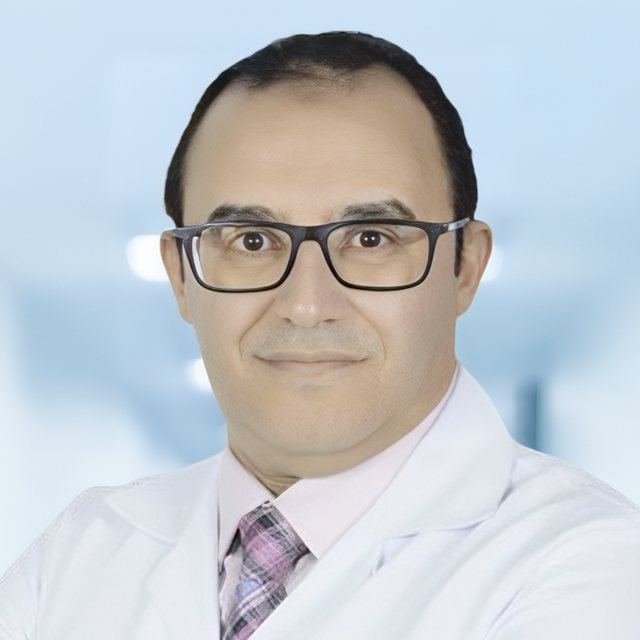

About the Metabolic Liver Academy
An independent, bilingual academy for fatty liver education, built for patients and doctors in the Arab world.
Our mission
Help people in the Arab world find fatty liver early, understand it, and act on it. We do this with free, bilingual education for patients and practical, guideline-based learning for the doctors who care for them.
Why here: about 4 in 10 people in our region have fatty liver, yet the region produces only about 3% of the world's research on it, and many doctors outside liver clinics do not follow the guidelines. See the evidence.
What we stand for
- Free and bilingual. Every page in Arabic and English.
- Evidence first. Based on guidelines, with sources on every page.
- Open records. Each clinical page shows who wrote it, when it was last checked, and whether it has had independent peer review yet. Every change is kept in a public history.
- Independent. No sponsors write, review or approve our content.
- Private. No accounts, cookies, ads or tracking.
Our people

Founder & Director
Dr. Mahmoud Al Desoky, MD
Consultant Internist & Gastroenterologist · Assistant Professor of Internal Medicine
Dr. Al Desoky has worked in medicine for more than 25 years. His clinical and academic work centres on metabolic dysfunction-associated steatotic liver disease (MASLD) and the links between the liver, obesity, diabetes and heart risk.
He leads a hospital tele-hepatology service, is a certified Clinical Trial Principal Investigator, and gives patient-education talks in Arabic. He founded the Academy to give patients and doctors in the Arab world clear, trusted fatty liver education in their own language.
Founder's roles and memberships
- Lead, Tele-Hepatology Initiative
- Certified Clinical Trial Principal Investigator (184-hour programme)
- Invited faculty, interdisciplinary Neurogenic Bladder & Bowel course (2024 to 2026)
- Member: SLMENA, EASL, MENASL
Advisory board, faculty and reviewers
The Academy is building a small advisory board of senior hepatologists and endocrinologists, a faculty of doctors who teach and write, and a panel of specialist reviewers. Until then, pages are written and checked by the founder and are marked as not yet peer reviewed. Members will be named here with their disclosures once confirmed.
Join us
Are you a hepatologist, gastroenterologist, endocrinologist, dietitian or primary care doctor who wants to review a page, give a talk or write for patients? Email mdesoky15@gmail.com with your specialty and the topic you would like to help with.
Disclosures
Dr. Mahmoud Al Desoky (founder): none. In the past 24 months he has had no financial relationships with industry: no grants, speaker fees, advisory or consulting roles, industry-paid trial roles, or shares. Last updated 25 October 2026; updated every 12 months. See our conflict of interest policy.
Selected publications
- El-Kassas M, AlNaamani KM, Sanai FM, Yilmaz Y, et al., Desoky MS. Denominator bias in MENA MASLD epidemiology: a call for decision-grade surveillance. Saudi Journal of Gastroenterology. 2026. DOI
- Desoky MS, El-Kassas M. Metabolic dysfunction-associated steatotic liver disease in challenging care settings: clinical implications from the MENA region. EMJ Hepatology. 2026. DOI
- Alzaki AA, Alqahtani MZ, Aman E, et al., Desoky MS. THR-β agonists vs incretin therapies for noncirrhotic MASH: a biopsy-anchored systematic review with GRADE certainty. Cureus. 2026. DOI
- Al-Juhani AA, Desoky MS, Almuhaimid AA, et al. Efficacy of gut microbiome-targeted therapies in modulating systemic inflammation and low-grade chronic inflammatory states in adults with metabolic disorders: a systematic review. Cureus. 2025. DOI
Full list on ORCID.
Partners
We welcome societies, universities, patient groups and companies that share our mission. Partners can support a module, a lecture series or a screening event. They never write or approve our content. See partners and independence, read our conflict-of-interest policy, or email mdesoky15@gmail.com to talk.